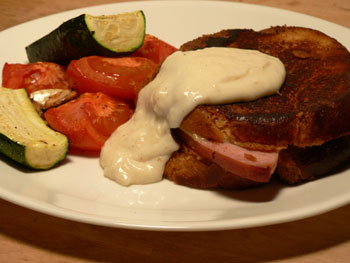

Croque monsieur
I took a beautiful brioche home today, and one of the chefs told me I should make croques monsieur with it. I had no idea what else to make tonight, so I thought, why not.

I splurged at Whole Foods on some Kerrygold butter after listening to Emily and Sabena get all hot and bothered about it last night. And I bought a ham steak, which is something I probably never would have bought otherwise. It’s totally delicious. I’ve spent the last several years thinking I don’t like ham, when in fact there’s nothing better. It’s everything I want out of meat: It’s tender. It’s juicy. It’s salty. With melted Gruyère and Kerrygold, it’s divine.
The béchamel sauce was a last-minute addition; the brioche started to look a bit dry. Is this all there is to béchamel? Am I missing something? I melted two tablespoons of butter, whisked in two tablespoons of flour, added a cup of milk, a bay leaf, seasoning, and stirred it for two minutes. It certainly tasted like béchamel. It looks a little perverted on my sandwich, but it made it twice as good, especially mixed with the roasted tomato. (Tomatoes may not be in season, but they are on sale, and I was roasting them anyway.)
Comments
Brioche also makes fabulous French toast.
I do think it’s a bit wasteful to use Kerrygold butter on croques monsieur; it’s hard to imagine appreciating the delicate flavors melted and mingled with the ham and cheese. As a table spread, yes, it is delicious, but at those prices I would reserve it for when I can really taste it and use house butter on my grilled cheese sandwiches.
Now that you’ve mastered the bèchamel sauce, can soufflé be far behind?
Well I hardly used any of the Kerry for the sandwiches—I only spread the insides of the bread with it and used cheap butter for sautéing. When I buy a fancy food product, it’s like a new toy; I just can’t wait to use it!
I need a soufflé dish.
Add a comment